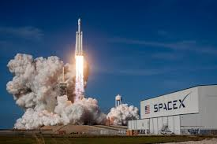

Private Space
In recent years, private companies have revolutionized space exploration, opening up new frontiers for space travel. Unlike traditional government-led space missions, private enterprises are pushing the boundaries with innovative technologies, reusable rockets, and ambitious plans for human colonization of other planets. Notable companies in this sector include SpaceX, Blue Origin, and Virgin Galactic, each with groundbreaking achievements that have set the stage for a new era in space exploration.
Key Players in Private Space Exploration
SpaceX
Founded by Elon Musk, SpaceX is one of the most prominent private space companies. Their key achievements include:
- Falcon 9: The world’s first reusable rocket, Falcon 9 has drastically reduced the cost of launching payloads into space.
- Dragon: A spacecraft designed for cargo missions to the International Space Station (ISS), and later for human spaceflight.
- Starship: SpaceX is developing Starship, a fully reusable spacecraft designed for deep space missions, with a long-term goal of sending humans to Mars.
Blue Origin
Founded by Amazon’s Jeff Bezos, Blue Origin focuses on making space travel accessible and sustainable. Key milestones include:
- New Shepard: A reusable suborbital rocket designed for space tourism and research missions.
- New Glenn: A heavy-lift orbital launch vehicle that aims to provide a variety of space services.
- Lunar Lander: Blue Origin is developing lunar landers as part of NASA's Artemis program to return humans to the Moon.
Virgin Galactic
Founded by Richard Branson, Virgin Galactic aims to make space tourism a reality. Key contributions include:
- SpaceShipTwo: A suborbital spaceplane designed to carry passengers into space for a brief experience of weightlessness and breathtaking views of Earth.
- VSS Unity: Virgin Galactic's first successful commercial spaceflight vehicle, which has already taken private astronauts to space.